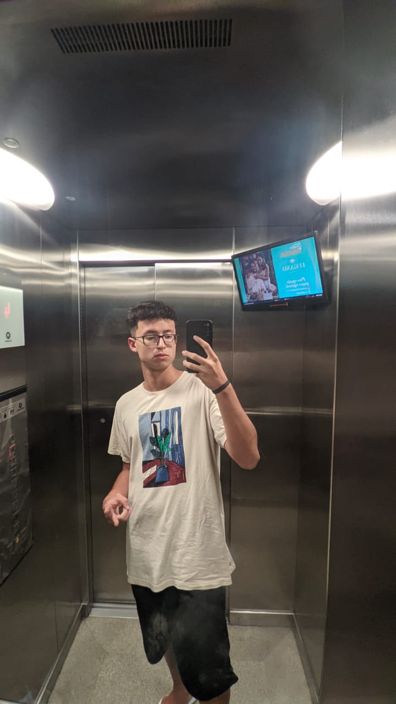
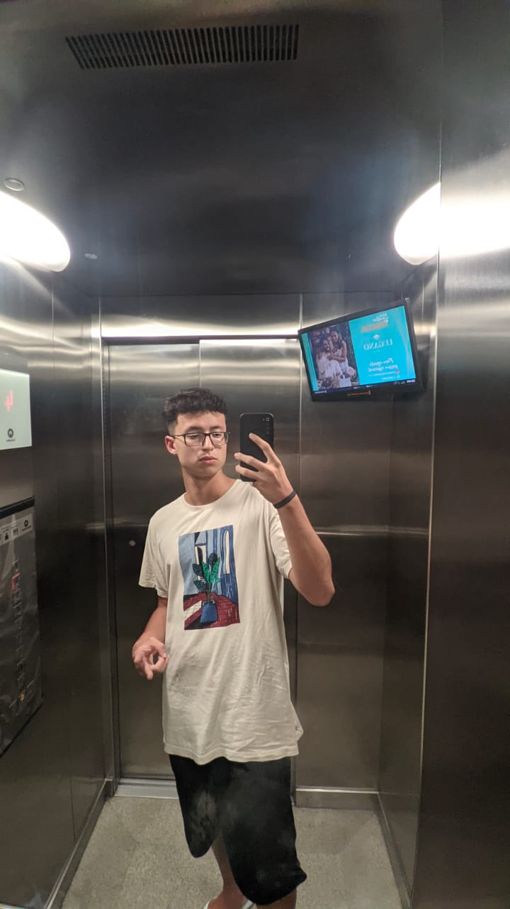

quem sou eu
Ian ferreira Tupinambá Machado, Joseense de 18 anos.
,
Comecei a cursar a Fatec SJC em 2022 no curso de DSM
Ensino Médio Completo e concluido em 2021
DEV júnior
meus hobbies
pequeno pratico esportes
culinária é algo que sempre esteve presente na minha vida
Música e literatura são coisas fundamentais para meu desenvovimento
Galeria
 
